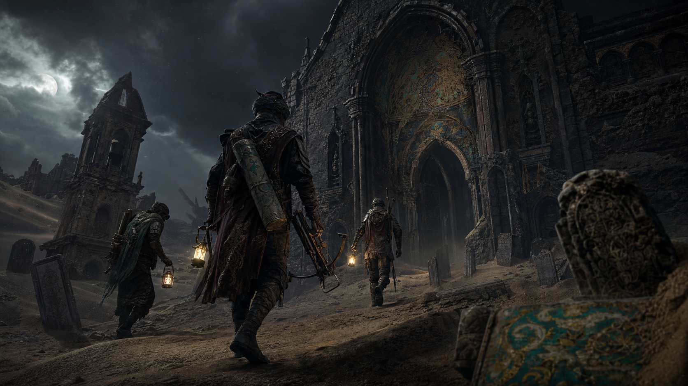

入局准备
确认任务、背包容量、撤离目标和本局洞窟异象。
敦煌幻想 · 听声搜打撤 · 三兔共耳传送门
四人小队入窟，听声寻找遗物，雷鼓破阵抢节奏，守住三兔共耳门撤离。玩法压缩成一局可执行闭环，美术围绕敦煌壁画、黑沙洞窟、雷神守护者和宝物掉落展开。
Playable Pitch Video
这条 72 秒版本去掉复杂职业协作，用入局、听声、搜物、雷鼓、三兔撤离和结算来说明 MVP 的真实制作边界。
MVP Gameplay
确认任务、背包容量、撤离目标和本局洞窟异象。
用听音脉冲识别遗物、兔耳印、敌影和撤离门方向。
遗物价值提高收益，同时增加负重、噪音和黑沙诅咒。
战斗围绕雷鼓窗口展开：击鼓破盾，短促推进。
兔耳印启动三兔门，三段共鸣提示开门、守门、撤离。
带出遗物、解锁壁画线索，下一局风险与收益同步升级。
风沙是底噪，铜铃指向遗物，轻回响指向兔耳印，黑沙噪音提示危险靠近。
价值越高，负重越大；噪音越高，越容易暴露；诅咒越深，幻听与假标记越多。
四神不再是职业分工，改成每局洞窟异象：风、雨、雷、电改变环境规则和风险节奏。
Art Bible

用于官网首屏、场景资产页和关卡氛围设定。

雷鼓、雷链、飞带和壁画矿物色构成关键识别。

壁画石、黑沙、铜面具与兔耳印融合的门区压迫源。

兔耳印、铜铃、壁画残卷、颜料罐、雷鼓碎片和黑沙遗物。

从普通撤离点升级为通往深层洞窟的终局目标。

外部据点与黑沙压力来源，可用于章节封面。

雷神、三兔门与小队撤离目标同框。

适合给制作团队拆任务、排优先级。
Three Rabbits Mark
LOGO 提炼自敦煌三兔共耳图案：三只兔绕中心奔跑，共用一只耳朵。网页中它承担品牌识别、撤离门符号、兔耳印掉落物图形和 UI 声波焦点。
Production Notes
入局配置、听音脉冲、遗物拾取、风险条、雷鼓破盾、三兔撤离、结算成长。
声音传播、假声源、黑沙幻听、门区守门波次、可丢弃背包与队友标记。
四神异象、更多洞窟、BOSS 事件、宝物套组、赛季经济和壁画剧情。
Concept Video Library
三条视频分别服务于不同沟通场景：外部宣传看落地演示，玩法评审看声音机制，制作讨论看节点拆解。
Pitch Summary
《鸣沙之门》的官网展示重点是：一条可执行的搜打撤闭环，一套围绕三兔共耳门的视觉识别，以及足够支撑制作推进的场景、角色、BOSS、道具和视频资产。
回看演示视频